Early during the first restoration when only authorized explorers were allowed to be in the cavern, the DRC posted some KI pictures and sound captures for everyone to see at their website.
Teledahn KI Snapshot 2002-05-02 f
Best of several successful shots taken with KI B29. Image uploaded after return (inter-age transmission failed). Substantial noise over entire image related to organic contamination of lens material in KI B29. Defects on right caused by microscopic crack in Host 1-S lattice location A601/J299/E7710 after upload. (Replace A601 after P2 approval.) Image distortion and vignetting byproducts of extraction and A/D conversion.
[XAD 15.2 msecs. Hv2.1 Sv0.83] Laxman
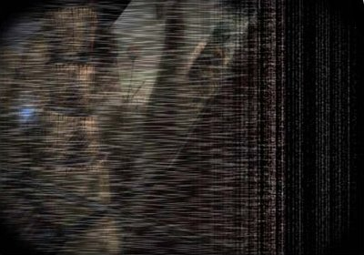
Bevin KI Snapshot 2002-05-03 c
Another shot taken with KI B29. Lens cleaning resulted in slight improvement in overall noise level (lens replacement probably required.) Defective lattice storage artifacts still prevalent. Software upgrade resulted in less image distortaion. Vignetting remains due to conversion from oval source image.
[XAD 13.3 msecs. Hv2.1 Sv0.84] Laxman
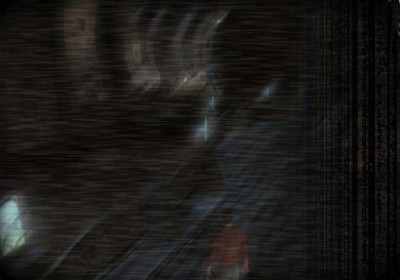
Garden KI Snapshot 2002-06-01 k
Best of Garden KI shapshots. Taken with KI C7. Image uploaded after return. C-class KIs don’t have the chromatic aberration evident in the B-class KIs, so the correction software has actually caused the aberration. Other issues: Periphery blurring and vignetting. (No lattice artifacts.)
[XAD 18.1 msecs. Hv2.5 Sv0.88] Laxman
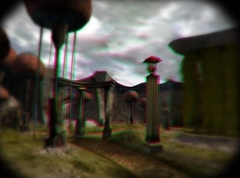
Seret KI Snapshot 2002-08-14 b
KI c4. Snapped a shot of Dr. Watson (and Rand?) on the Seret neighborhood balcony. Minor chromatic aberration evident - still adjusting the colour channel processing. Also picked up some periphery noise - new issue. Other issues: Periphery blurring, vignetting.
[XAD 9.1 msecs. Hv2.8 Sv0.97] Laxman
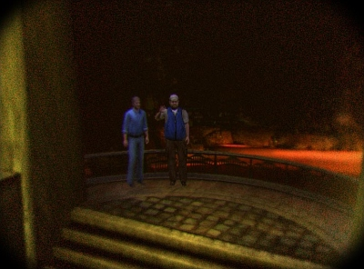
Day of Dancing KI Snapshot 2002-09-03 p
KI c4. A shot of some “D’ni Day of Dancing” in the community room in Bevin. No chromatic aberration. Still minor periphery noise and blurring. Gotta fix that vignetting.
[XAD 9.3 msecs. Hv2.8 Sv1.02] Laxman
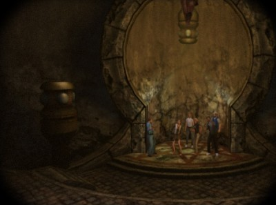
Eder Kemo KI Snapshot 2002-11-05
This shot of Rico in the Garden was submitted by an authorized explorer.
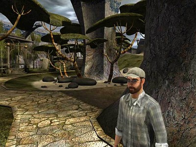
Ae’gura KI Snapshot 2002-11-25
Due to anomalies with the previous version of this shot, Marie kindly agreed to pose for a retake.
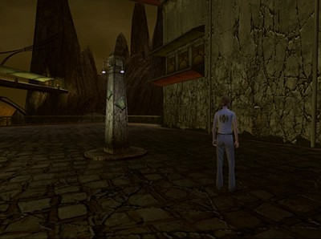
Explorers in D’ni 2003-01-26
A group of explorers were recently observed in the city.
They appeared to be standing in some sort of formation.
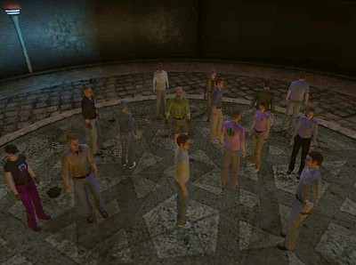
Kodama and Laxman 2003-02-27
Ikuro Kodama and Victor Laxman discuss the restoration progress of an area on Ae’gura.
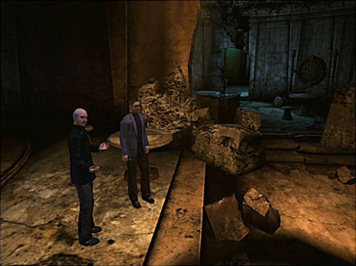
Plant on Eder Gira 2003-05-09
Sample from Marie Sutherland’s flora and fauna KI snapshot collection. This plant is native to Eder Gira.
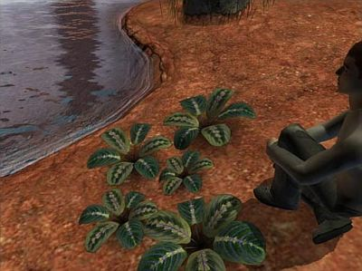
KI f4. Still having trouble with KI audio recording. Sample provided from Teledahn using yet another KI model (f) found in the Well. Issues with both regular frequency and white noise. Don’t know if it’s coming from the KI, the Host, or the conversion process. We’ll try another KI (f7) next time and see what changes. (Interesting Note: Not sure what they’re using to pick up the sound - nothing like a diaphragm is apparent. Suspect fine crystalline threads.)
[XAD 0.23 msecs. Hv3.3 Sv1.38] Laxman
KI f7. This sample is from Eder Kemo during one of its frequent storms. Still several playback issues. We have made a bit of progress with the higher frequencies and reducing the quantization noise. We’ll try to make adjustments at the Host next.
[XAD 0.4 msecs. Hv3.3 Sv1.42] Laxman
D’ni Gallery 2003-06-28
Photo of an interior of a building on Ae’gura.
Apparently, it was an art gallery.
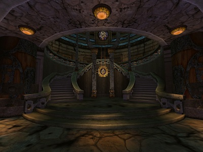
All Myst, Riven and D’ni images and text © Cyan Worlds, Inc. All rights reserved.
No part may be copied or reproduced without express, written permission of Cyan Worlds, Inc.
Assets used with permission.